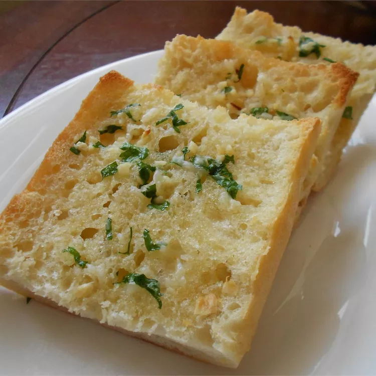

Garlic Bread Recipe (Source)

Ingredients
- 3 heads garlic
- 2 tablespoons olive oil
- 1 (1 pound) loaf Italian bread
- ½ cup butter, softened
- 2 tablespoons grated Parmesan cheese (Optional)
- 1 tablespoon chopped fresh parsley (Optional)
How to Make A Perfect Garlic Bread
- Prehead the oven.
- Slice the tops off of garlic heads, so the tip of each clove is exposed. Place garlic heads, cut-sides up,
on a baking sheet; drizzle tops with olive oil.
- Bake in the preheated oven until garlic is soft, about 30 minutes.
- Set the oven to broil.
- Slice bread loaf in half horizontally; place cut-side up on a baking sheet.
- Squeeze garlic cloves from their skins into a medium bowl. Stir in butter, Parmesan cheese, and parsley
until well blended. Spread onto the cut sides of bread.
- Broil bread until toasted, about 5 minutes.